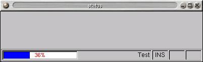

Class Hierarchy
Fl_Group
|
+----Fl_StatusPanel
Include Files
#include <FL/Fl_StatusPanel.H>
Description
This is a status panel that shows indicators for the CAPS and NUM lock states,
an INS (insert) state, and an arbitrary status message. It also includes an embedded
progress bar which is normally hidden but can be displayed and used on demand.
Methods
Creates a new Fl_StatusPanel widget using the given position, size,
and label string.
Destroys the widget and any value associated with it.
Toggle whether the CAP (caps lock) indicator is on.
This is the event handler loop. If you need to subclass and define special event
processing, this is where you'll start.
Toggle whether the INS (insert) indicator is on.
Toggle whether the NUM (number lock) indicator is on.
Get a pointer to the embedded progress bar.
Set the status text. (For example, the editor widget sets this to be the cursor row and column.)
Toggle whether or not to make the embedded progress bar visible.
Update the indicator display for CAPs and NUM, based on the most recent FLTK event.